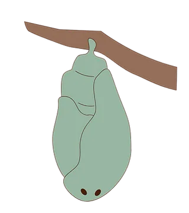
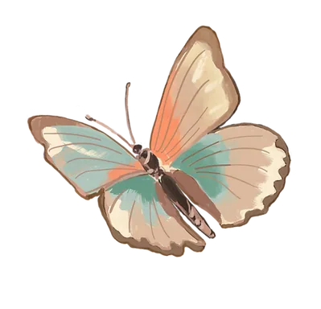
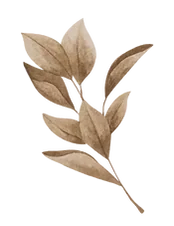

Empowerment for Mothers & Families
Empowering You to Empower Yourself - to Empower Your Children
Parenting, Pregnancy, Birth & Miscarriage
The cultural seeds of tomorrow live and grow in your children.

And you are not meant to do this alone.
I’m here to walk beside you as you enter the sacred ground of parenthood.
Discover the ways we can work togather.
Discover more about my work in:


I’m Hannah Abouzahrah
I am a Mother, Possibility Coach, Writer, Singer and Cultural Midwife. I'm consciously raising my daughter and holding space for parents and children to do the same. I empower you to break the cycle of generations: to heal stuck emotions, upgrade your communication skills, and hold space for feelings in yourself and your family.
I believe that by opening ourselves up to feeling, and holding space for our children to feel instead of dissociating or being numb, we can offer them the possibility of creating a different future, while forming deep and nurturing connections within the family.
Through presence, honest conversation, and deep listening, I help you uncover your capacity to respond - and midwife the culture you want your children to inherit. I walk alongside women and families through pregnancy, birth, parenting, and grief.
Services
Parenting Coaching
Gain new tools
Pregnancy & Birth Guidance
Emotional and energetic prep
Miscarriage Integration
Grieving and Transforming
For Future Parents
Conscious Pregnancy
Strengthen Culture in your Family
Create Village arround you
The way you parent becomes the culture your children inherit. You carry wisdom. I help you remember it.
Bond & Connection
Stronger inner family bonds, more presence and more love happening.
Communication
Powerful Communication and Negotiation tools to empower you and your family.
Awareness
Better conflict management.
Testimonials from Families
Read what becomes possible with empowerment.
Katherine Narbey
"Hannah's coaching sessions helped me get closer to my feelings. She provided me with feedback about what she saw in me that I found to be very significant. This supported me to get a deeper clarity about who I am. I found Hannah to be very skilled in holding a contained space wherein I could find more clarity and connect with my feelings."
Mairead Albiston
" Working with Hannah in 1:1 sessions, I gained insight & knowledge to help understand & harness my feelings. I began to familiarise myself with my emotions, feeling safe & supported to stay and work through the uncomfortable emotions that arose.
Hannah gave my partner & I the space to share fears, feelings and needs with each other, she gently mediated so there was room for responses and problem solving as we went along. This allowed us to actually hear each other & gain appreciation for our own & each other’s needs with an idea of how to begin moving forward mindfully together."
Michelle Cole, Registered Nurse Specialist
(Child, Adolescent & Family)
"After experiencing many years of supervision, counselling and therapy training I was not sure what to expect with Possibility Coaching. I found Hannah offered refreshing client centered sessions, led with light support and without restricting structure. I appreciated exploring what arose through an embodied approach and I would recommend Hannah to health and care professionals as an adjunct to supervision for this reason. I would also recommend her to anyone who is looking for fresh, focused, brief personal and relational work."
Mission
Raising a Regenerative culture with and for our children.
I care about how we, as a culture, raise our children. The cultural seeds of tomorrow live and grow in them, and these seeds are nurtured by us, the adults. I am passionate about working in this sector, to midwife a different culture from the ground up.
As a possibility coach and cultural midwife, I support you to:
-
Heal inherited emotional patterns
-
Upgrade communication and connection
-
Rediscover courage to face fear and the unknown